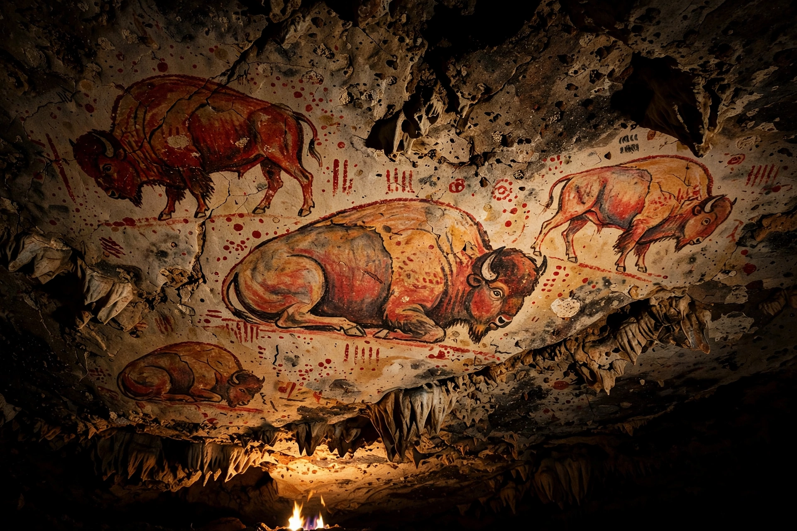

Cave of AltamiraThe Cave of Altamira is a cave complex near Santillana del Mar in Cantabria, Spain, renowned for its prehistoric cave art featuring charcoal drawings and polychrome paintings of contemporary local fauna and human hands, created during the Upper Paleolithic.
The cave was discovered by Modesto Cubillas in 1868; landowner Marcelino Sanz de Sautuola investigated it, and in 1879 his young daughter María spotted the painted bison on the ceiling of the main chamber — the famous Polychrome Ceiling. Sceptics dismissed the paintings as forgeries until other painted caves were found around 1900; Émile Cartailhac's "Mea culpa d'un sceptique" (1902) conceded their authenticity.
Images include bison, horses, deer and boars rendered in red ochre, charcoal and manganese, exploiting the rock's natural bulges for three-dimensional effect. Occupation and painting spanned Solutrean and Magdalenian periods, roughly 36,000 to 13,000 years ago.
Visitor breath and humidity damaged the art, leading to closures; a replica cave and museum (the Neocave, opened 2001) receive most visitors, with strictly limited access to the original.